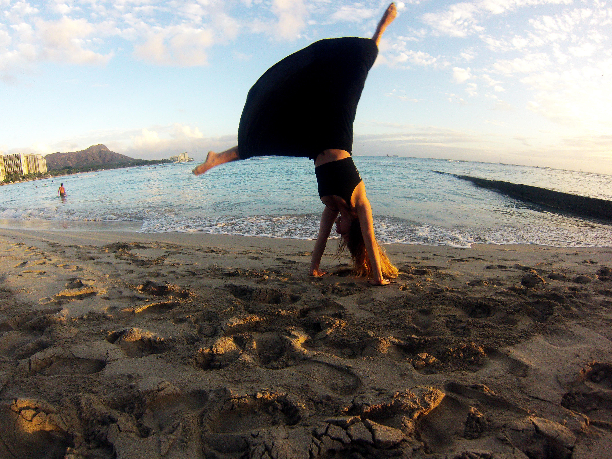

I love being present to the natural workings around me! I love going for walks outside and using my senses to gather information. Like listening to all the birds whistling and whatever else my ears can pick up in the distance. I like examining the ground as I walk, stopping if I see an interesting rock.
Ever since I was a little girl I knew I wanted to live next to the ocean or sea! Which is exactly what I did, after high school I moved to Honolulu, Hawaii to pursue a degree in Marine Biology. During my studies I also received a scholarship for my participation on the Hawaii Pacific University's Cheerleading team; the skills I developed over many years as a competitve gymnast and athlete earned me a place on that highly ranked team. It was an honor.
Living and studying in Hawaii had me in Heaven! What fortune to have the opportunity! I spent a lot of time at the beach and exploring ocean. In my studies I learned for the first time about the Great Pacific Garbage Patch...a spark was lit that day...to be continued